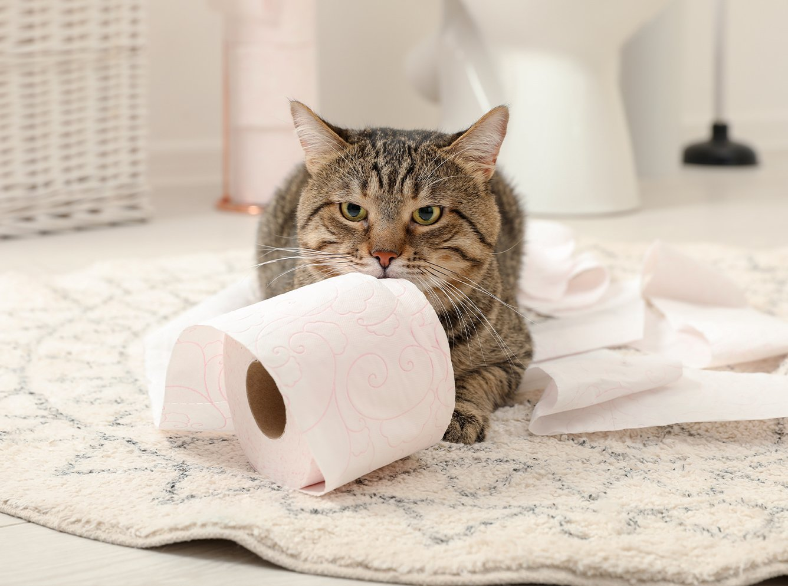
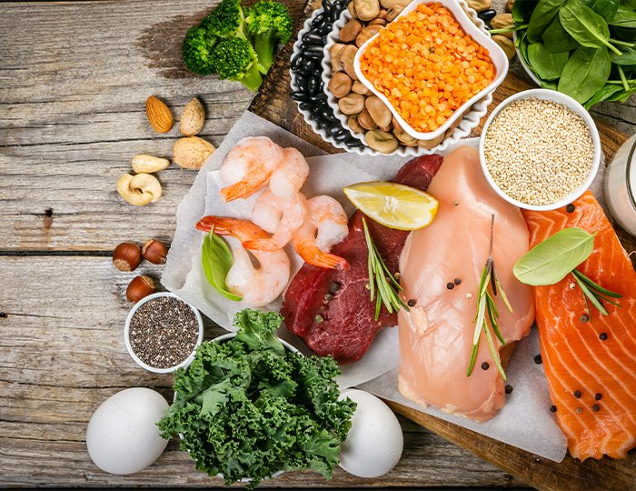
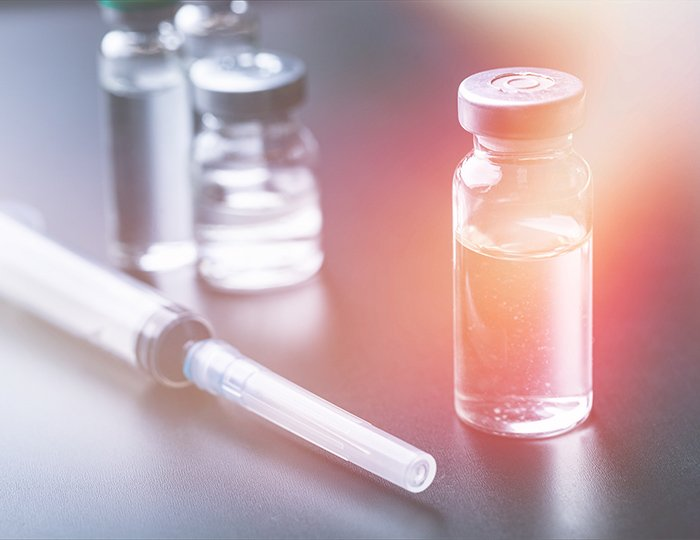
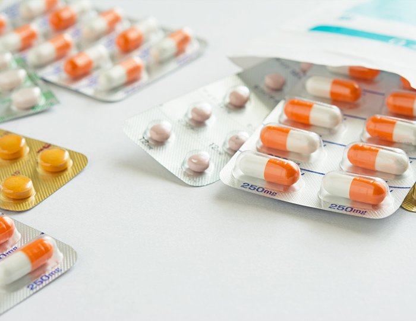
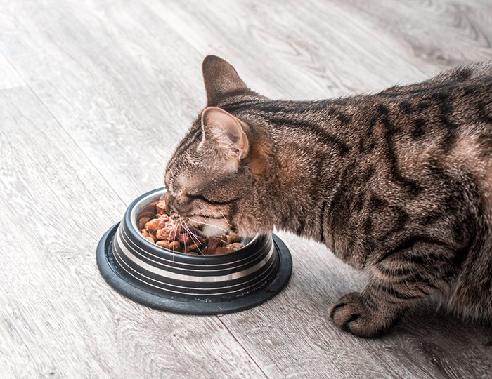
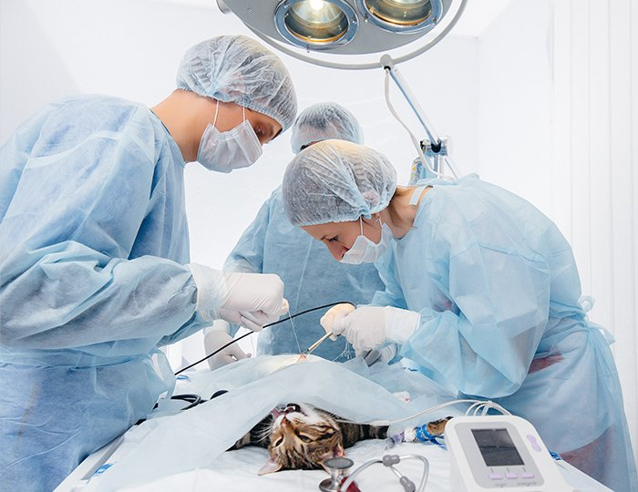
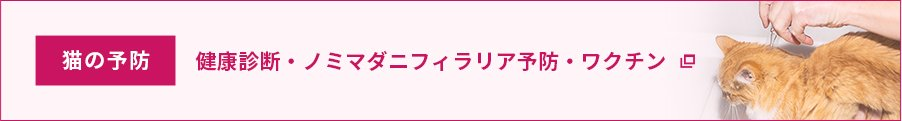

慢性腎臓病
何らかの原因によって腎臓の機能が徐々に低下していく病気です。特に高齢の猫に多いですが、若齢でも起こり得ます。腎臓の機能が低下することで様々な症状が現れます。
腎臓の75%が障害されるまで症状が現れないため、病気がわかったタイミングでかなり進行した状態であることがほとんどです。
慢性腎臓病は進行性の病気であり、腎機能が回復することはありません。

何らかの原因によって腎臓の機能が徐々に低下していく病気です。特に高齢の猫に多いですが、若齢でも起こり得ます。腎臓の機能が低下することで様々な症状が現れます。
腎臓の75%が障害されるまで症状が現れないため、病気がわかったタイミングでかなり進行した状態であることがほとんどです。
慢性腎臓病は進行性の病気であり、腎機能が回復することはありません。

膀胱や尿道など猫の下部尿路の病気の総称であり、その半数以上が原因を特定できない特発性の膀胱炎（細菌感染などにより膀胱に炎症がおこる）です。
その他、尿石症（膀胱や尿道に結石ができる）、尿道閉塞（何らかの原因で尿道が詰まり尿が出せない、尿道の狭いオスがかかりやすい）、尿道炎（細菌感染などにより尿道に炎症がおこる）などが挙げられます。
猫ちゃんは生来、腎臓の構造上の問題などから腎臓機能の低下が起きてしまう生き物です。
また、発症原因は明確になっていませんが、飲水量が少なかったり、慢性的な過度のストレスや、歯周病など様々な要因があるといわれています。
| 慢性腎臓病のステージ分類（IRISのステージ分類） | |
|---|---|
| ステージ1 | ほぼ無症状です。エコー画像上での腎臓の異常やSDMAなどの血液検査などで検出します。 |
| ステージ2 | 軽度の症状あるいは無症状です。多飲、色の薄い尿を大量に排泄するなどが見られます。元気や食欲に大きな差はありません。 |
| ステージ3 | 見るからに元気や食欲がない様子になります。嘔吐することが増え、口内炎や痩せるなど全身に影響がでてきます。 |
| ステージ4 | 食欲低下、嘔吐、口臭、口の中の潰瘍、けいれんなどの重症です。 |
慢性腎臓病の診断のためには、以下のような検査を行います。
慢性腎臓病は根本的な治療ができない病気です。しかし、早期に慢性腎臓病を発見して、症状の進行を遅らせたり苦痛を緩和したりすることはできます。
ぜひ、元気な様子が見られるうちから健康診断や尿検査を定期的に受診しましょう。慢性腎臓病のステージや猫ちゃんの状態に合わせて、以下のような治療を行います。

腎臓病に対する療法食をご提案します。また、脱水症状に陥らないようにウェットフードの併用なども行います。
血圧を下げるお薬の処方や症状を緩和させるお薬の処方を行います。場合によっては、サプリメントも併用します。

脱水症状に陥らないよう、定期的に点滴をします。体内の水分と栄養バランスを維持します。
などがあります。
特発的に発症することが多いです。特発性膀胱炎は明らかな原因が見つからないにも関わらず、膀胱炎症状（頻尿、血尿など）になります。
腎臓、尿管、膀胱、尿道にストルバイトやシュウ酸カルシウムの結晶や結石ができることで病気が発生します。特定の猫種では結晶ができやすく、オスの場合にも症状が現れやすいです。
※食事やあまり遊ばない（動かない）ことや、飲水量が少ないこと、ストレスが多い（環境の変化、新しい猫が来た、工事などいつもと違う音がするなど）ことなども原因になります。
下部尿路疾患の診断のためには、以下のような検査を行います。
病気に合わせた治療を行います。

抗生剤など内科治療を行います。症状に応じて、その他の薬剤も処方します。

ストルバイト結石の場合は食事療法、シュウ酸カルシウム結石の場合は外科手術を行います。

閉塞の原因である結石などをカテーテルなどで除去します。
初期症状がでないことがあるため、元気そうに見えていても定期的に健康診断を行うことで早期発見をすることが大切です。
ストレスがない生活環境なども腎泌尿器疾患の予防に繋がることがあるため、猫ちゃんが安心して生活できる環境になっているか見直すことも大切です。

各院の診療時間・ご予約方法は、開院に向けて決定次第ご案内いたします。